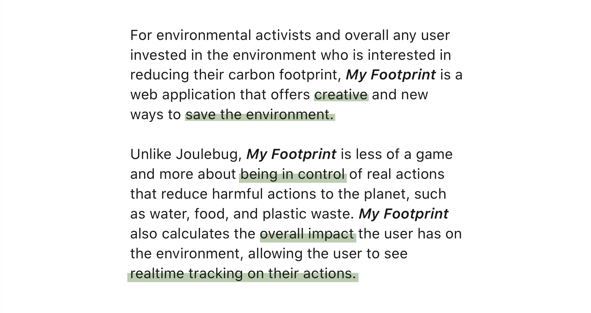

Background
Turning Green is a global student-led movement devoted to inform, inspire, and mobilize a global network of student leaders for sustainable change in their lives, school campuses, and local communities. This summer, I was the designer of the remote student team Project Green Challenge to work on My Footprint, a web application that allows users to keep track of their carbon footprint and engage with 14 different environmental themes. Themes include water, food, and plastic waste, and each theme has a number of challenges in which users can set an amount of time to commit to. Challenge examples include "How long can I go without accepting a plastic bag from a grocery store?" and "How can I make my own toothpaste to prevent purchasing new plastic tubed ones?"
Features
- Provide different challenges on how to reduce carbon footprint.
- Dashboard to view metrics and overall environmental impact based on commitment to challenges.
- Short educational clips about the themes before accessing the challenges.
- Challenges are not static, and new ones will be added to the queue.
- Tip of the Day notifications that ring in advice on how to be more environmentally conscious.
Workflow and Communication
I worked extremely closely with the Project Manager Jenny Fang through one-on-one weekly Google Hangout calls. At the start of these sessions, I walked Jenny through my design sketches and mockups, and she provided crucial critiques that allowed me to reiterate and refine upon my designs as a first time Product Designer. As the PM, Jenny communicated her vision for the pages in the app, and I provided the technical and design structural feedback and steps to reach our desired goal.
On Wednesdays, I hopped on calls with the backend and frontend engineering leads, in which I walked them through my hi-fidelity prototypes for different pages.
App Development Process
Brainstorm
Posterboarding initial ideas between Jenny and overhead Turning Green team
Agile Development
The team set up an Asana account platform, a project management software that streamlined communication between the PM, engineering team, and the designer.
Our workflow, in which I was responsible for reiterating upon designs requested by the PM and engineering team
Sketches to Mockups
Work in progress. Please request to see the progress of my work, from sketching to rapidly creating high fidelity mockups in Adobe Illustrator.
Reflections
As my first exposure to a Product Designer role, I practiced a lot of sketching, wireframing, and creating high fidelity prototypes using Adobe Illustrator. However, the time we had to create a fully functional app was limited to 1.5 months. Our team was small, with seven 100% full-time students oocupied with full time summer jobs. My Footprint was a side project we collaborated on, which provided all members valuable industry skills on a low-risk product. With this opportunity, there are a lot of lessons to take away, and room for future growth and development.
Lessons Learned
I joined the team in mid-July, and was the sole designer. This was the biggest issue for me, not because of the scope of the project, but because I wish I had worked with other designers. It is critical to work with different perspectives, highlight painpoints undiscoverable by a single designer, and better represent the demographics of the users.
The part-time project spanned over 1.5 months. It was near impossible to conduct any UX research or gain insights on the app we were designing and coding from scratch. I had not learned about personas prior to this position, so I did not explicitly come up with them. However, I was designing with the users in mind 100% of the time, like when Jenny and I spoke about the information we would gather from new users, or when I designed the flow from Theme to Challenges to Starting the Challenge. I sketched multiple diagrams for this particular flow. Here, user testing will be incredibly helpful in seeing the agency and how users interact with the different processes.
In practicing with UI and atomic design, I did better familiarize myself with Adobe Illustrator, which was the only tool I was efficient in during this time. I was also mindful in keeping the atomic design of the My Footprint app with the original Turning Green and Project Green Challenge website, with the generous whitespace, text hierarchy, and its signature green color. This experience was a good way to keep consistent with existing platforms, even as a new designer on the team. This is important to keep the integrity of the original site and the app. In the future, I intend on creating a style guide so engineers and new designers can refer to it when building and creating new content.
In the Future: Reiterating, Refining, and Robustifying
Currently in my Interaction Design I Fall 2018 course, I am redesigning My Footprint and starting with user interviews, competitive analysis, and storyboarding. Later in the semester, I will be learning how to effectively create personas.
Value Proposition
User Interviews
20-30 minute phone calls each with a target audience of students, and gathering insights on their daily lifestyle, internet usage, and knowledge on the current environmental state.
Competitive Analysis
Comparing available features across all three apps.
Storyboarding
Work in Progress
Please check back soon for updates on the brief!